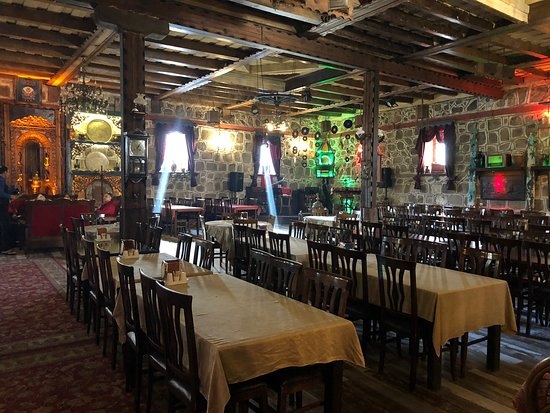
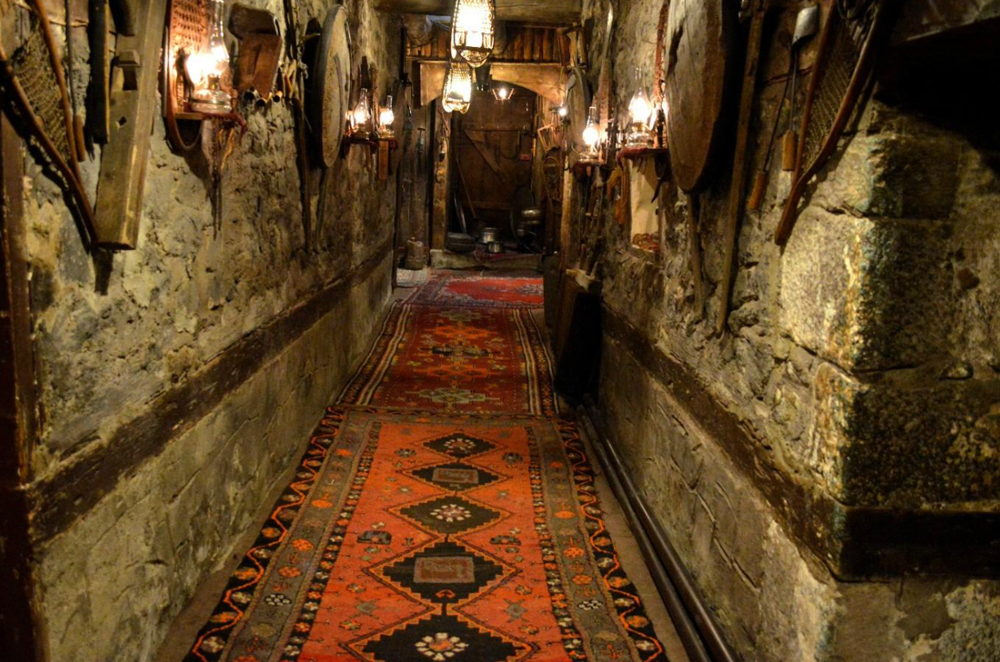
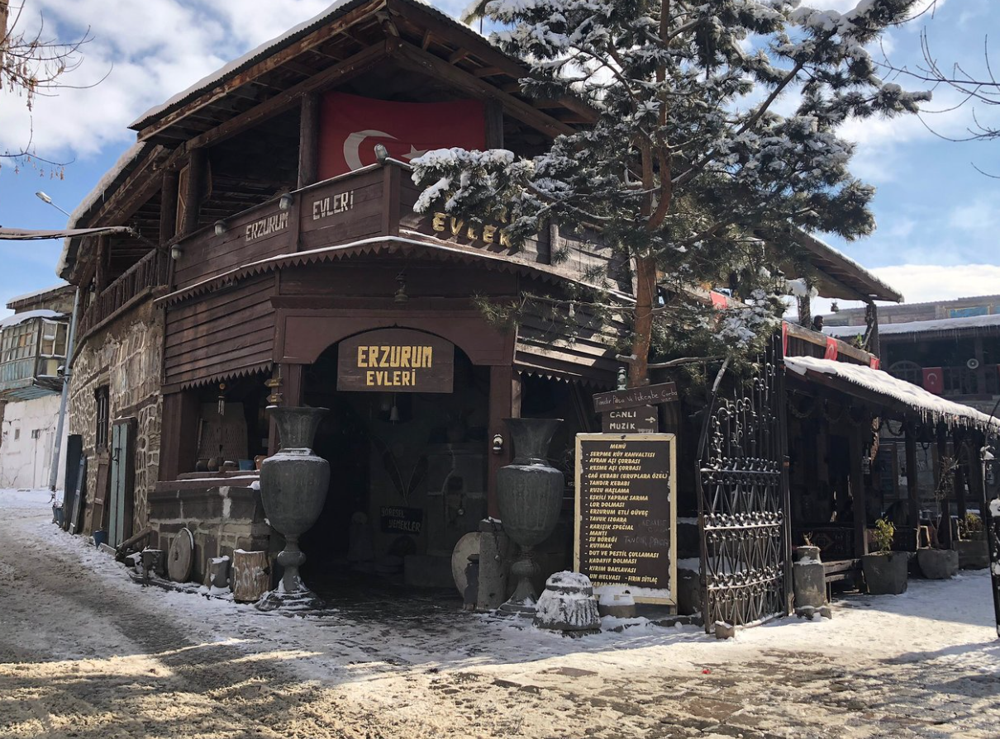
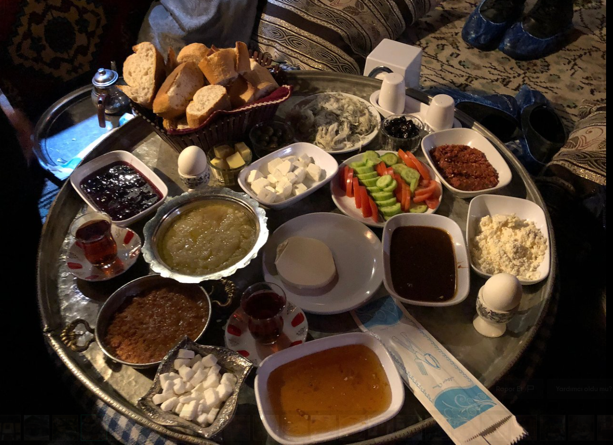

Erzurum Evleri
341
Restoranlar - 99 içerisinde 3. - Erzurum
Türk, Yerel




×
Restoranlar - 99 içerisinde 3. - Erzurum
Türk, Yerel
Mekan güzel. Eski erzurum mahalesindeki evleri birleştirip labirent şeklinde çok güzel bir ortam tek sıkıntı ve yıldız kesmem mutfak uzakta istedğiniz kahve veya çaylar gelene kadar eksı 7-8 derece olan havada soğuyoyor
Erzurum da gidilecek en doğru yerlerden biti bence. Canlı müzik patates ve meyve 40₺ gibi makul bir fiyata veriliyor. İçerideki eşyalar antika ve her odası farklı güzel. İster sandalyede, sedirde ister yerde minderlerde oturabiliyorsunuz. Çayı, közde patatesi ok beğendik. Tok olduğumuz için diğer seçenekleri deneyemedik.
Tarihi Erzurum evleri görülmeye değer bir mekan. İçerisinde eski yıllara ait ev eşyaları, süs eşyaları, eski silahlar, yöresel kıyafetler, iletişim araçları bulunuyor. Bir de içerisinde restoran var. Şark köşesi usulü yemek hizmeti veriliyor. Girişte kişi başı 5 TL alıyorlar. Sadece gezmek isteyenler için.